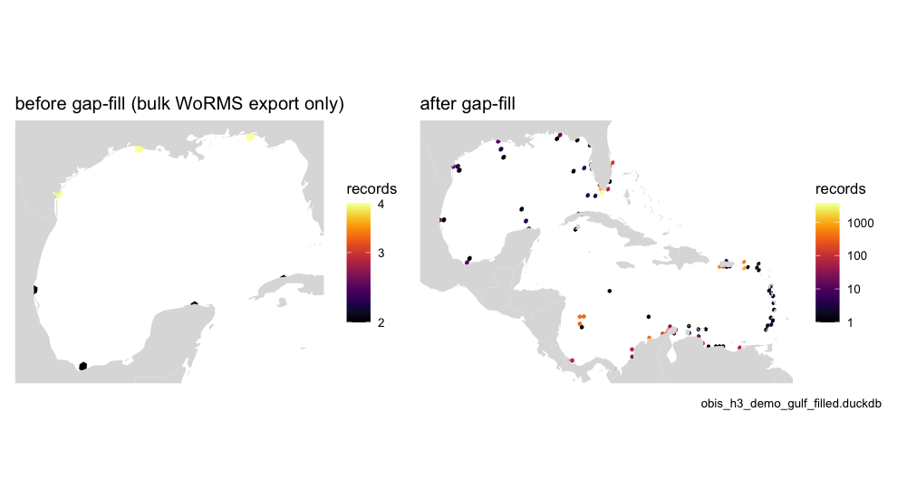
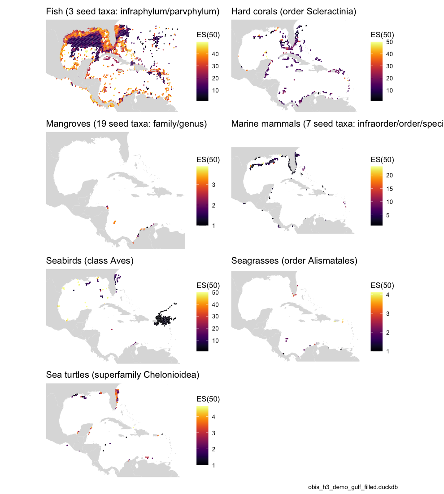

The GOOS / IOOS biology & ecosystems Essential Ocean
Variables (EOVs) are defined taxonomically, and the IOOS
Marine Life Data Network publishes that definition as root WoRMS
AphiaIDs per EOV — 33 seeds across seven EOVs: fish, hard corals,
mangroves, marine mammals, seabirds, seagrasses and sea turtles. That is
exactly a multi-seed version of the subtree walk in vignette("taxon_children"),
so an EOV map from the obis_h3 store is one query away.
This article shows the definitions, the taxonomy coverage gap that
silently empties EOVs unless it is closed, and the per-EOV maps — Table
4 and Figures 1–2 of the OBIS → H3 → EOV manuscript.
library(obisindicators)
library(dplyr)
library(ggplot2)
con <- obis_store_connect() # the store named by OBIS_H3_DUCKDBPrecomputed. The store is not available where this documentation is built, so the chunks below were run locally by
data-raw/precompute_articles.Rand their output committed. This render used obis_h3_demo_gulf_filled.duckdb, a regional demo store (Gulf of Mexico + Caribbean, seepaper/build_demo_store.R); before/after comparisons use obis_h3_demo_gulf.duckdb.
The definitions
obis_eov_seeds() returns the seed AphiaIDs per EOV;
obis_eov_label() turns an EOV key into a readable label;
obis_eov_aphiaid() gives the seeds to pass wherever an
aphiaid filter is accepted.
knitr::kable(obis_eov_seeds(), caption = "EOV seed taxa (IOOS MLDN eov_taxonomy)")| eov | label | desc | aphiaid | taxon | rank |
|---|---|---|---|---|---|
| fish | Fish | All fishes: jawless, cartilaginous and bony. | 1829 | Agnatha | Infraphylum |
| fish | Fish | All fishes: jawless, cartilaginous and bony. | 1517375 | Chondrichthyes | Parvphylum |
| fish | Fish | All fishes: jawless, cartilaginous and bony. | 152352 | Osteichthyes | Parvphylum |
| hardCorals | Hard corals | Reef-building stony corals. | 1363 | Scleractinia | Order |
| mangroves | Mangroves | Mangrove trees, shrubs and the mangrove fern, as 19 genera plus one family. | 235048 | Combretaceae | Family |
| mangroves | Mangroves | Mangrove trees, shrubs and the mangrove fern, as 19 genera plus one family. | 235033 | Avicennia | Genus |
| mangroves | Mangroves | Mangrove trees, shrubs and the mangrove fern, as 19 genera plus one family. | 234450 | Nypa | Genus |
| mangroves | Mangroves | Mangrove trees, shrubs and the mangrove fern, as 19 genera plus one family. | 234495 | Bruguiera | Genus |
| mangroves | Mangroves | Mangrove trees, shrubs and the mangrove fern, as 19 genera plus one family. | 235086 | Ceriops | Genus |
| mangroves | Mangroves | Mangrove trees, shrubs and the mangrove fern, as 19 genera plus one family. | 235089 | Kandelia | Genus |
| mangroves | Mangroves | Mangrove trees, shrubs and the mangrove fern, as 19 genera plus one family. | 235091 | Rhizophora | Genus |
| mangroves | Mangroves | Mangrove trees, shrubs and the mangrove fern, as 19 genera plus one family. | 235106 | Sonneratia | Genus |
| mangroves | Mangroves | Mangrove trees, shrubs and the mangrove fern, as 19 genera plus one family. | 235056 | Excoecaria | Genus |
| mangroves | Mangroves | Mangrove trees, shrubs and the mangrove fern, as 19 genera plus one family. | 235060 | Pemphis | Genus |
| mangroves | Mangroves | Mangrove trees, shrubs and the mangrove fern, as 19 genera plus one family. | 235045 | Camptostemon | Genus |
| mangroves | Mangroves | Mangrove trees, shrubs and the mangrove fern, as 19 genera plus one family. | 235116 | Heritiera | Genus |
| mangroves | Mangroves | Mangrove trees, shrubs and the mangrove fern, as 19 genera plus one family. | 235063 | Xylocarpus | Genus |
| mangroves | Mangroves | Mangrove trees, shrubs and the mangrove fern, as 19 genera plus one family. | 235072 | Osbornia | Genus |
| mangroves | Mangroves | Mangrove trees, shrubs and the mangrove fern, as 19 genera plus one family. | 235075 | Pelliciera | Genus |
| mangroves | Mangroves | Mangrove trees, shrubs and the mangrove fern, as 19 genera plus one family. | 235077 | Aegialitis | Genus |
| mangroves | Mangroves | Mangrove trees, shrubs and the mangrove fern, as 19 genera plus one family. | 235068 | Aegiceras | Genus |
| mangroves | Mangroves | Mangrove trees, shrubs and the mangrove fern, as 19 genera plus one family. | 234488 | Acrostichum | Genus |
| mangroves | Mangroves | Mangrove trees, shrubs and the mangrove fern, as 19 genera plus one family. | 235103 | Scyphiphora | Genus |
| marineMammals | Marine mammals | Seals & sea lions, whales & dolphins, and sirenians, plus four individually-listed carnivores (sea otter, marine otter, North American river otter, polar bear). | 148736 | Pinnipedia | Infraorder |
| marineMammals | Marine mammals | Seals & sea lions, whales & dolphins, and sirenians, plus four individually-listed carnivores (sea otter, marine otter, North American river otter, polar bear). | 2688 | Cetacea | Infraorder |
| marineMammals | Marine mammals | Seals & sea lions, whales & dolphins, and sirenians, plus four individually-listed carnivores (sea otter, marine otter, North American river otter, polar bear). | 159502 | Sirenia | Order |
| marineMammals | Marine mammals | Seals & sea lions, whales & dolphins, and sirenians, plus four individually-listed carnivores (sea otter, marine otter, North American river otter, polar bear). | 242598 | Enhydra lutris | Species |
| marineMammals | Marine mammals | Seals & sea lions, whales & dolphins, and sirenians, plus four individually-listed carnivores (sea otter, marine otter, North American river otter, polar bear). | 477316 | Lutra felina | Species |
| marineMammals | Marine mammals | Seals & sea lions, whales & dolphins, and sirenians, plus four individually-listed carnivores (sea otter, marine otter, North American river otter, polar bear). | 159017 | Lontra canadensis | Species |
| marineMammals | Marine mammals | Seals & sea lions, whales & dolphins, and sirenians, plus four individually-listed carnivores (sea otter, marine otter, North American river otter, polar bear). | 137085 | Ursus maritimus | Species |
| seabirds | Seabirds | Class Aves entire - i.e. ALL birds, not a seabird-only subset. Against a marine-only snapshot that is a reasonable proxy, but it is a definitional choice made by the EOV list. | 1836 | Aves | Class |
| seagrasses | Seagrasses | Order Alismatales, the marine flowering plants (also takes in some brackish/freshwater pondweeds). | 153491 | Alismatales | Order |
| seaTurtles | Sea turtles | Marine turtles. | 987094 | Chelonioidea | Superfamily |
obis_eov_label("marineMammals")
#> marineMammals
#> "Marine mammals (7 seed taxa: infraorder/order/species)"
obis_eov_aphiaid("seaTurtles")
#> [1] 987094Why seeds-and-subtree rather than the Darwin Core rank
columns: the rank a name occupies is not stable, so a
class = <name> filter silently matches
nothing when OBIS files the name elsewhere (Table 3 in vignette("taxon_children")).
Subtree walking is rank-agnostic and immune.
obis_eov_sql() builds the tile SQL for an EOV. With one
EOV and no year filter it routes to the precomputed
idx_h3_eov layer (as fast as the all-taxa path); with
years, several EOVs, or a store without the layer baked it falls back to
the live subtree aggregation over occ_h3.
cat(obis_eov_sql("seaTurtles"))
#> SELECT cell_id, es AS value, n FROM idx_h3_eov WHERE eov = 'seaTurtles' AND res = LEAST({{res}}, 7)obis_eov_bake() adds the two layers to a store:
eov (membership: each EOV’s seeds expanded over
taxon) and idx_h3_eov (indicators per EOV and
resolution 1–7).
The taxonomy coverage gap
EOV membership is only as complete as the taxon table.
The bulk WoRMS download is not a complete cover of the
AphiaIDs OBIS carries — on the 2026-07 global store about 7% of distinct
species-level AphiaIDs (8.3 M of 121.9 M records) were absent, notably
algae, whose WoRMS records come from thematic databases the Darwin Core
export lags. Every one of those is invisible to every subtree, EOV and
SPUE query until obis_taxon_fill_gaps() supplements the
bulk join with WoRMS REST lookups, to transitive closure.
obis_taxon_orphans() reports the gap on a store:
Totals per EOV (Table 4)
tot <- calc_eov_totals(con)
knitr::kable(
tot |> mutate(across(c(records, species, cells), ~ format(.x, big.mark = ",")),
pct_records = round(pct_records, 2)),
caption = "Records, species and occupied cells per EOV")| eov | label | records | species | cells | pct_records |
|---|---|---|---|---|---|
| fish | Fish | 5,607,473 | 3,874 | 82,049 | 67.88 |
| hardCorals | Hard corals | 347,292 | 350 | 5,110 | 4.20 |
| mangroves | Mangroves | 39,291 | 9 | 70 | 0.48 |
| marineMammals | Marine mammals | 125,340 | 46 | 16,645 | 1.52 |
| seabirds | Seabirds | 284,620 | 251 | 17,096 | 3.45 |
| seagrasses | Seagrasses | 12,875 | 14 | 381 | 0.16 |
| seaTurtles | Sea turtles | 29,926 | 7 | 11,761 | 0.36 |
With a store from before the gap-fill,
compare_eov_totals() shows what the fill recovered per
EOV:
con_b <- obis_store_connect(before_path)
before <- calc_eov_totals(con_b)
cmp <- compare_eov_totals(before, tot)
knitr::kable(
cmp |> mutate(across(c(records_before, records_after, records_delta), ~ format(.x, big.mark = ",")),
records_pct = round(records_pct, 1)),
caption = "EOV totals before and after the WoRMS gap-fill")| eov | label | records_before | records_after | records_delta | records_pct | species_before | species_after | cells_before | cells_after |
|---|---|---|---|---|---|---|---|---|---|
| fish | Fish | 5,606,448 | 5,607,473 | 1,025 | 0.0 | 3855 | 3874 | 81971 | 82049 |
| hardCorals | Hard corals | 346,660 | 347,292 | 632 | 0.2 | 269 | 350 | 5092 | 5110 |
| mangroves | Mangroves | 39,287 | 39,291 | 4 | 0.0 | 8 | 9 | 70 | 70 |
| marineMammals | Marine mammals | 125,340 | 125,340 | 0 | 0.0 | 46 | 46 | 16645 | 16645 |
| seabirds | Seabirds | 283,605 | 284,620 | 1,015 | 0.4 | 174 | 251 | 17082 | 17096 |
| seagrasses | Seagrasses | 24 | 12,875 | 12,851 | 53545.8 | 4 | 14 | 8 | 381 |
| seaTurtles | Sea turtles | 29,926 | 29,926 | 0 | 0.0 | 7 | 7 | 11761 | 11761 |
Seagrasses before and after the gap-fill (Fig. 1)
Seagrasses were the EOV most affected: most of their AphiaIDs were among the orphans, so the EOV was nearly empty before the fill.
after_sg <- obis_cell_indicators(con, RES_MAP, eov = "seagrasses")
p_after <- gmap_cells(after_sg, "n", label = "records", trans = "log10") +
labs(title = if (has_before) "after gap-fill" else "seagrasses EOV (this store)")
if (has_before) {
before_sg <- obis_cell_indicators(con_b, RES_MAP, eov = "seagrasses")
p_before <- gmap_cells(before_sg, "n", label = "records", trans = "log10") +
labs(title = "before gap-fill (bulk WoRMS export only)")
p <- patchwork::wrap_plots(p_before, p_after, ncol = 2) +
patchwork::plot_annotation(caption = store_label)
} else {
p <- p_after + labs(caption = store_label)
}
p
plot of chunk fig1
The seven EOVs: records, ES(50) and coverage (Fig. 2)
obis_cell_indicators() returns every indicator per cell
for an EOV at one resolution (H3 4 here, ~1,770 km² per hexagon),
reading the precomputed layer when it can. ES(50) is only meaningful
where a cell has at least 50 records, so each EOV gets three panels:
records, ES(50) masked to eligible cells, and the eligible-cell coverage
itself.
eovs <- bind_rows(lapply(EOV_ORDER, function(e) {
d <- obis_cell_indicators(con, RES_MAP, eov = e)
if (nrow(d)) cbind(eov = e, d) else NULL
}))
summ <- eovs |>
group_by(eov) |>
summarize(cells = n(), records = sum(as.numeric(n)),
cells_es_eligible = sum(n >= 50), frac_eligible = mean(n >= 50),
median_es = median(es[n >= 50], na.rm = TRUE), .groups = "drop")
knitr::kable(summ |> mutate(frac_eligible = round(frac_eligible, 3), median_es = round(median_es, 2)),
caption = sprintf("Per-EOV coverage at H3 resolution %d", RES_MAP))| eov | cells | records | cells_es_eligible | frac_eligible | median_es |
|---|---|---|---|---|---|
| fish | 4391 | 5607473 | 1592 | 0.363 | 26.09 |
| hardCorals | 975 | 347292 | 284 | 0.291 | 13.15 |
| mangroves | 31 | 39291 | 19 | 0.613 | 2.22 |
| marineMammals | 1902 | 125340 | 154 | 0.081 | 2.05 |
| seaTurtles | 1903 | 29926 | 73 | 0.038 | 2.96 |
| seabirds | 1106 | 284620 | 173 | 0.156 | 2.12 |
| seagrasses | 86 | 12875 | 24 | 0.279 | 2.22 |
for (e in unique(eovs$eov)) {
d <- filter(eovs, eov == e)
d$eligible <- as.numeric(d$n >= 50)
p1 <- gmap_cells(d, "n", label = "records", trans = "log10") + labs(title = "records")
p2 <- gmap_cells(d, "es", label = "ES(50)", mask = d$n >= 50) + labs(title = "ES(50), n ≥ 50")
p3 <- gmap_cells(d, "eligible", label = "ES-eligible") + labs(title = "coverage (n ≥ 50)")
p <- patchwork::wrap_plots(p1, p2, p3, ncol = 3) +
patchwork::plot_annotation(title = obis_eov_label(e), caption = store_label)
save_fig(p, paste0("fig2_", e), width = 15, height = 4.5)
cat("\n\n### ", obis_eov_label(e), "\n\n", sep = "")
print(p)
}ES(50) across all EOVs
plots <- lapply(unique(eovs$eov), function(e) {
d <- filter(eovs, eov == e)
gmap_cells(d, "es", label = "ES(50)", mask = d$n >= 50) + labs(title = obis_eov_label(e, max_taxa = 1L))
})
p <- patchwork::wrap_plots(plots, ncol = 2) + patchwork::plot_annotation(caption = store_label)
p
plot of chunk all-es50
DBI::dbDisconnect(con, shutdown = TRUE)